Lesespur: Abschied und Trauer: wie Menschen ihrer Toten gedenken – Lesespurgeschichte mit Rätseln (Klasse 9)

Lesespur: Arbeit und Leistung: was macht Arbeit wertvoll? – Lesespurgeschichte mit Rätseln (Klasse 9)

Lesespur: Blues und Gospel: Stimmen der Hoffnung – Lesespurgeschichte mit Rätseln (Klasse 9)
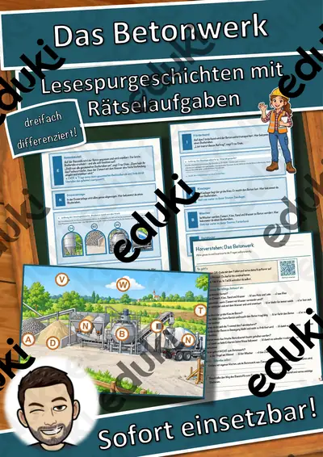
Lesespur: Das Betonwerk – Lesespurgeschichte mit Rätseln (Klasse 9)

Lesespur: Das Düngemittelwerk – Lesespurgeschichte mit Rätseln (Klasse 9)
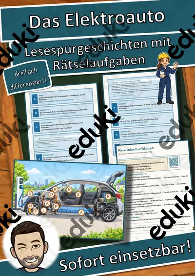
Lesespur: Das Elektroauto – Lesespurgeschichte mit Rätseln (Klasse 9)

Lesespur: Das Erdbeben – Lesespurgeschichte mit Rätseln (Klasse 9)

Lesespur: Das Gehirn – Lesespurgeschichte mit Rätseln (Klasse 9)
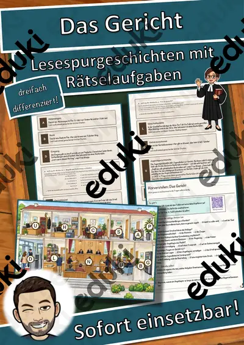
Lesespur: Das Gericht – Lesespurgeschichte mit Rätseln (Klasse 9)
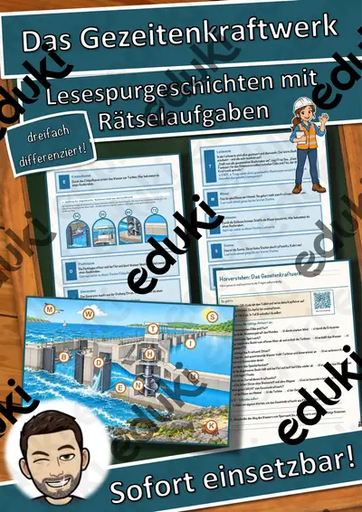
Lesespur: Das Gezeitenkraftwerk – Lesespurgeschichte mit Rätseln (Klasse 9)
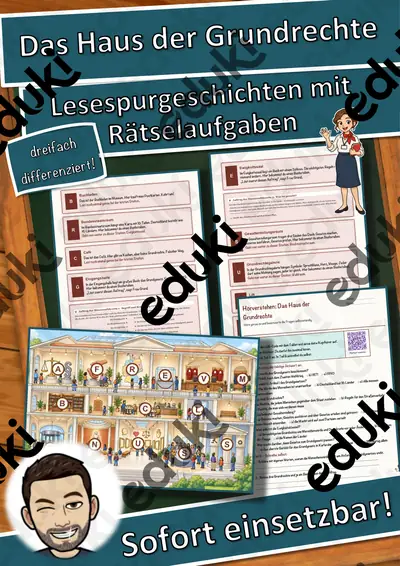
Lesespur: Das Haus der Grundrechte – Lesespurgeschichte mit Rätseln (Klasse 9)

Lesespur: Das Hormonsystem – Lesespurgeschichte mit Rätseln (Klasse 9)

Lesespur: Das Kernkraftwerk – Lesespurgeschichte mit Rätseln (Klasse 9)

Lesespur: Das Kohlekraftwerk – Lesespurgeschichte mit Rätseln (Klasse 9)

Lesespur: Das Lymphsystem – Lesespurgeschichte mit Rätseln (Klasse 9)
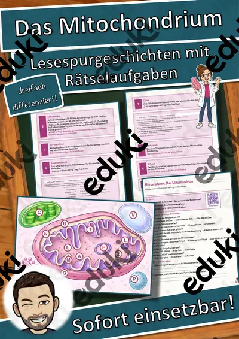
Lesespur: Das Mitochondrium – Lesespurgeschichte mit Rätseln (Klasse 9)

Lesespur: Das Nachrichtenstudio – Lesespurgeschichte mit Rätseln (Klasse 9)

Lesespur: Das Nervensystem – Lesespurgeschichte mit Rätseln (Klasse 9)
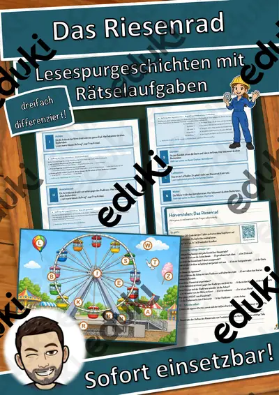
Lesespur: Das Riesenrad – Lesespurgeschichte mit Rätseln (Klasse 9)

Lesespur: Das Rückenmark – Lesespurgeschichte mit Rätseln (Klasse 9)

Lesespur: Das Stahlwerk – Lesespurgeschichte mit Rätseln (Klasse 9)

Lesespur: Das Stromnetz – Lesespurgeschichte mit Rätseln (Klasse 9)
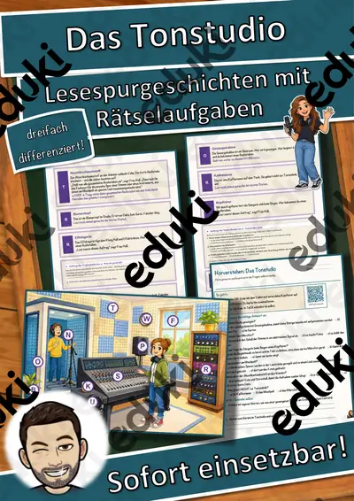
Lesespur: Das Tonstudio – Lesespurgeschichte mit Rätseln (Klasse 9)

Lesespur: Das Windrad – Lesespurgeschichte mit Rätseln (Klasse 9)

Lesespur: Das Zementwerk – Lesespurgeschichte mit Rätseln (Klasse 9)

Lesespur: Der 3D-Druck: In der Technik-Werkstatt – Lesespurgeschichte mit Rätseln (Klasse 9)
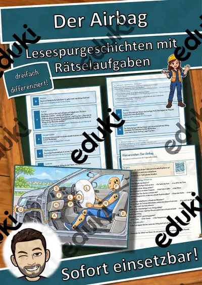
Lesespur: Der Airbag – Lesespurgeschichte mit Rätseln (Klasse 9)

Lesespur: Der Ausbildungsvertrag: Probezeit, Urlaub, Rechte und Pflichten – Lesespurgeschichte mit Rätseln (Klasse 9)

Lesespur: Der Bleiakku – Lesespurgeschichte mit Rätseln (Klasse 9)

Lesespur: Der Blitzableiter – Lesespurgeschichte mit Rätseln (Klasse 9)
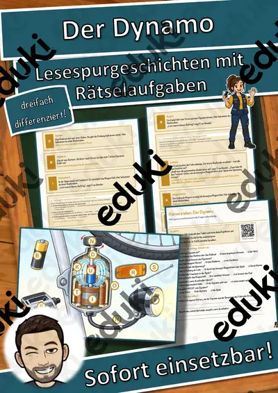
Lesespur: Der Dynamo – Lesespurgeschichte mit Rätseln (Klasse 9)

Lesespur: Der Equal Pay Day: warum Frauen weniger verdienen – Lesespurgeschichte mit Rätseln (Klasse 9)
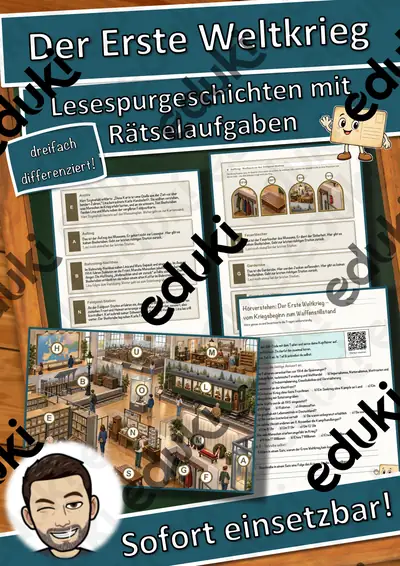
Lesespur: Der Erste Weltkrieg: vom Kriegsbeginn zum Waffenstillstand – Lesespurgeschichte mit Rätseln (Klasse 9)

Lesespur: Der Generator – Lesespurgeschichte mit Rätseln (Klasse 9)

Lesespur: Der Hochofen – Lesespurgeschichte mit Rätseln (Klasse 9)
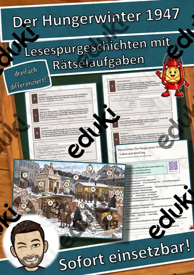
Lesespur: Der Hungerwinter 1947: Leben nach dem Krieg – Lesespurgeschichte mit Rätseln (Klasse 9)

Lesespur: Der Hurrikan – Lesespurgeschichte mit Rätseln (Klasse 9)
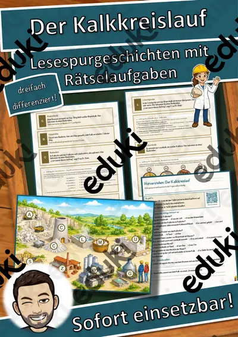
Lesespur: Der Kalkkreislauf – Lesespurgeschichte mit Rätseln (Klasse 9)

Lesespur: Der Katalysator – Lesespurgeschichte mit Rätseln (Klasse 9)

Lesespur: Der Kohlenstoffkreislauf – Lesespurgeschichte mit Rätseln (Klasse 9)
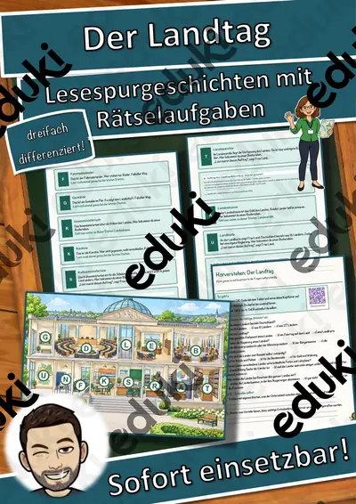
Lesespur: Der Landtag – Lesespurgeschichte mit Rätseln (Klasse 9)

Lesespur: Der Laser – Lesespurgeschichte mit Rätseln (Klasse 9)

Lesespur: Der Lautsprecher – Lesespurgeschichte mit Rätseln (Klasse 9)
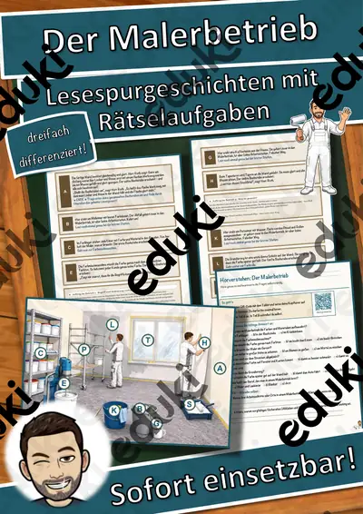
Lesespur: Der Malerbetrieb: Ein Praktikum beim Maler – Lesespurgeschichte mit Rätseln (Klasse 9)
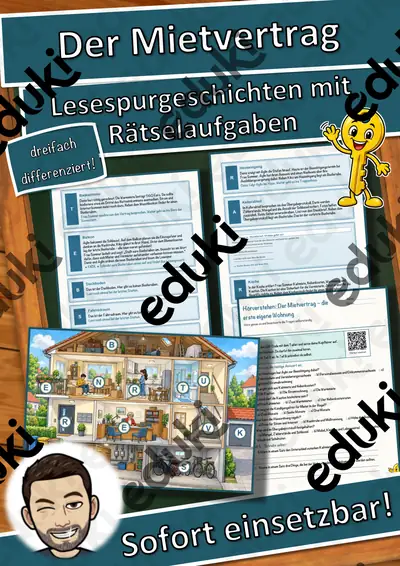
Lesespur: Der Mietvertrag: die erste eigene Wohnung – Lesespurgeschichte mit Rätseln (Klasse 9)

Lesespur: Der Permafrost – Lesespurgeschichte mit Rätseln (Klasse 9)

Lesespur: Der Rost – Lesespurgeschichte mit Rätseln (Klasse 9)

Lesespur: Der Salzstock – Lesespurgeschichte mit Rätseln (Klasse 9)
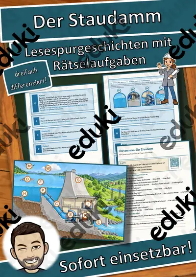
Lesespur: Der Staudamm – Lesespurgeschichte mit Rätseln (Klasse 9)
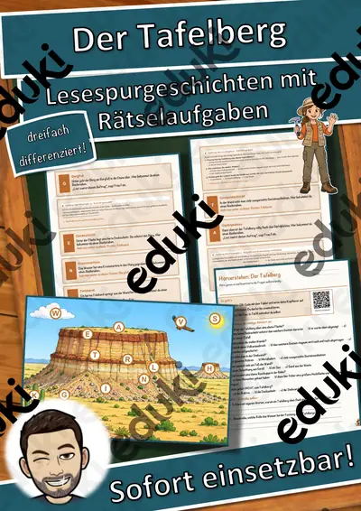
Lesespur: Der Tafelberg – Lesespurgeschichte mit Rätseln (Klasse 9)

Lesespur: Der Tagebau – Lesespurgeschichte mit Rätseln (Klasse 9)

Lesespur: Der Transformator – Lesespurgeschichte mit Rätseln (Klasse 9)
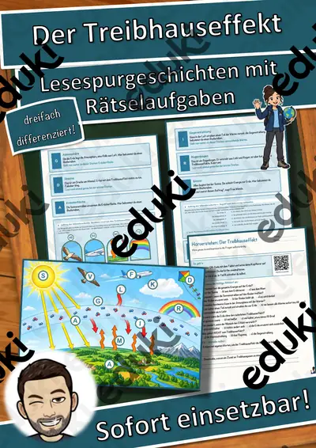
Lesespur: Der Treibhauseffekt – Lesespurgeschichte mit Rätseln (Klasse 9)

Lesespur: Der Verbrennungsmotor – Lesespurgeschichte mit Rätseln (Klasse 9)

Lesespur: Der Viertaktmotor – Lesespurgeschichte mit Rätseln (Klasse 9)

Lesespur: Der Zellkern – Lesespurgeschichte mit Rätseln (Klasse 9)

Lesespur: Der erste Ferienjob: Jugendarbeitsschutz, Minijob und Lohn – Lesespurgeschichte mit Rätseln (Klasse 9)
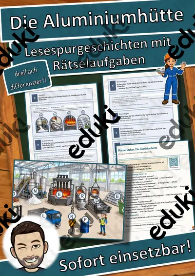
Lesespur: Die Aluminiumhütte – Lesespurgeschichte mit Rätseln (Klasse 9)

Lesespur: Die Arztpraxis: Ein Praktikum beim Arzt – Lesespurgeschichte mit Rätseln (Klasse 9)

Lesespur: Die Bestäubung – Lesespurgeschichte mit Rätseln (Klasse 9)

Lesespur: Die Bewerbung: Anschreiben, Lebenslauf, Vorstellungsgespräch – Lesespurgeschichte mit Rätseln (Klasse 9)

Lesespur: Die Biogasanlage – Lesespurgeschichte mit Rätseln (Klasse 9)

Lesespur: Die Bohrinsel – Lesespurgeschichte mit Rätseln (Klasse 9)
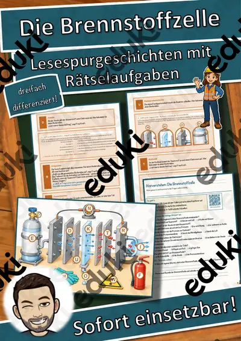
Lesespur: Die Brennstoffzelle – Lesespurgeschichte mit Rätseln (Klasse 9)
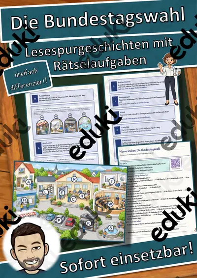
Lesespur: Die Bundestagswahl – Lesespurgeschichte mit Rätseln (Klasse 9)
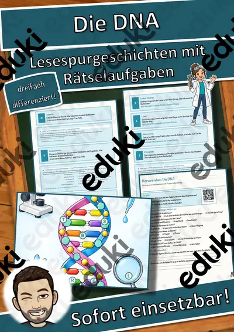
Lesespur: Die DNA – Lesespurgeschichte mit Rätseln (Klasse 9)

Lesespur: Die Elektrolyse – Lesespurgeschichte mit Rätseln (Klasse 9)
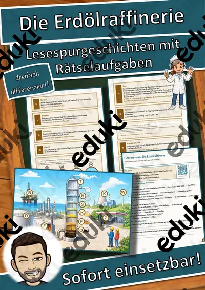
Lesespur: Die Erdölraffinerie – Lesespurgeschichte mit Rätseln (Klasse 9)
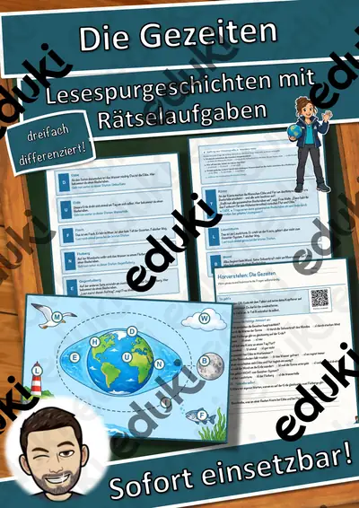
Lesespur: Die Gezeiten – Lesespurgeschichte mit Rätseln (Klasse 9)

Lesespur: Die Gießerei – Lesespurgeschichte mit Rätseln (Klasse 9)

Lesespur: Die Glasfaser – Lesespurgeschichte mit Rätseln (Klasse 9)
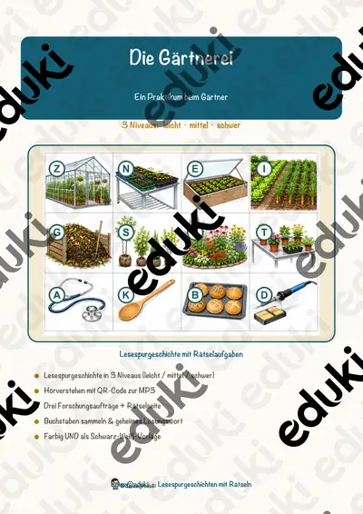
Lesespur: Die Gärtnerei: Ein Praktikum beim Gärtner – Lesespurgeschichte mit Rätseln (Klasse 9)

Lesespur: Die Kfz-Werkstatt: Ein Praktikum beim Kfz-Mechatroniker – Lesespurgeschichte mit Rätseln (Klasse 9)

Lesespur: Die Kokerei – Lesespurgeschichte mit Rätseln (Klasse 9)

Lesespur: Die Korrosion – Lesespurgeschichte mit Rätseln (Klasse 9)

Lesespur: Die Kunststoffherstellung – Lesespurgeschichte mit Rätseln (Klasse 9)
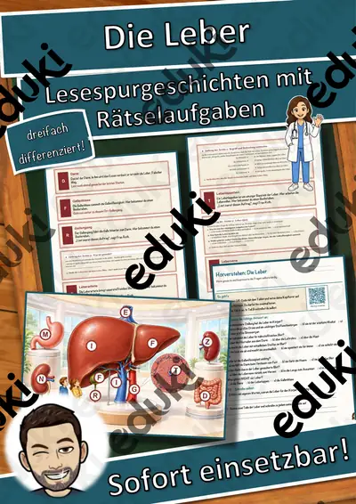
Lesespur: Die Leber – Lesespurgeschichte mit Rätseln (Klasse 9)

Lesespur: Die Leuchtdiode – Lesespurgeschichte mit Rätseln (Klasse 9)

Lesespur: Die Mikrowelle – Lesespurgeschichte mit Rätseln (Klasse 9)

Lesespur: Die Müllverbrennungsanlage – Lesespurgeschichte mit Rätseln (Klasse 9)
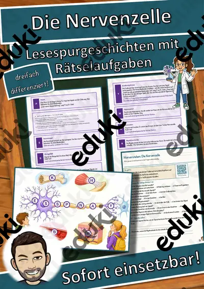
Lesespur: Die Nervenzelle – Lesespurgeschichte mit Rätseln (Klasse 9)

Lesespur: Die Neutralisation – Lesespurgeschichte mit Rätseln (Klasse 9)

Lesespur: Die Novemberrevolution 1918: vom Kaiserreich zur Demokratie – Lesespurgeschichte mit Rätseln (Klasse 9)

Lesespur: Die Photovoltaikanlage – Lesespurgeschichte mit Rätseln (Klasse 9)
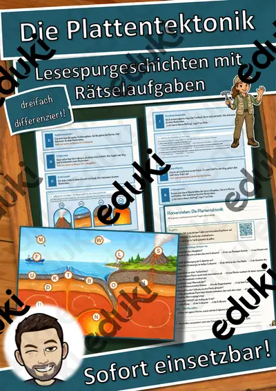
Lesespur: Die Plattentektonik – Lesespurgeschichte mit Rätseln (Klasse 9)
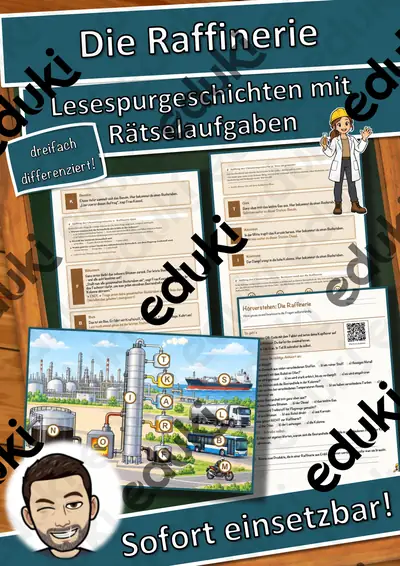
Lesespur: Die Raffinerie – Lesespurgeschichte mit Rätseln (Klasse 9)

Lesespur: Die Rakete – Lesespurgeschichte mit Rätseln (Klasse 9)
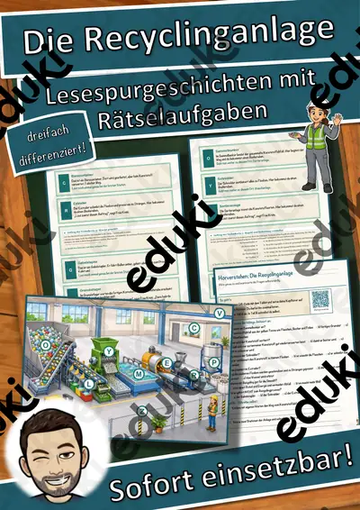
Lesespur: Die Recyclinganlage – Lesespurgeschichte mit Rätseln (Klasse 9)

Lesespur: Die Romantik: Musik der Gefühle – Lesespurgeschichte mit Rätseln (Klasse 9)

Lesespur: Die Röntgenröhre – Lesespurgeschichte mit Rätseln (Klasse 9)
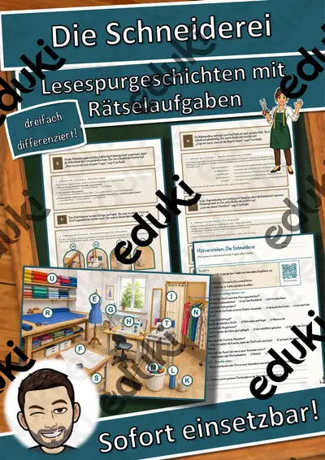
Lesespur: Die Schneiderei: Ein Praktikum beim Schneider – Lesespurgeschichte mit Rätseln (Klasse 9)

Lesespur: Die Schreinerei: Ein Praktikum beim Tischler – Lesespurgeschichte mit Rätseln (Klasse 9)

Lesespur: Die Schuldenfalle: Ratenkauf, Handyvertrag und Zahlpause – Lesespurgeschichte mit Rätseln (Klasse 9)

Lesespur: Die Seife – Lesespurgeschichte mit Rätseln (Klasse 9)

Lesespur: Die Solarzelle – Lesespurgeschichte mit Rätseln (Klasse 9)
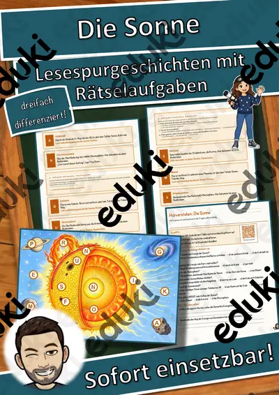
Lesespur: Die Sonne – Lesespurgeschichte mit Rätseln (Klasse 9)

Lesespur: Die Titration – Lesespurgeschichte mit Rätseln (Klasse 9)

Lesespur: Die Vererbung – Lesespurgeschichte mit Rätseln (Klasse 9)
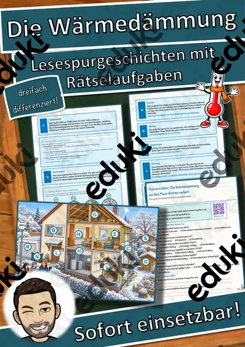
Lesespur: Die Wärmedämmung: wo das Haus Wärme verliert – Lesespurgeschichte mit Rätseln (Klasse 9)

Lesespur: Die Wärmepumpe – Lesespurgeschichte mit Rätseln (Klasse 9)
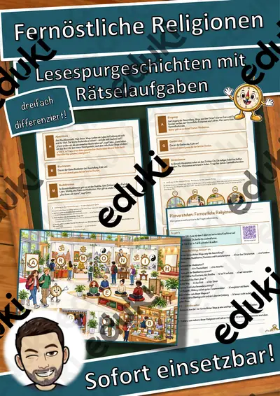
Lesespur: Fernöstliche Religionen – Lesespurgeschichte mit Rätseln (Klasse 9)
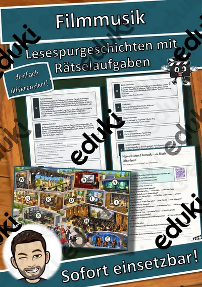
Lesespur: Filmmusik: wie Musik Bilder lenkt – Lesespurgeschichte mit Rätseln (Klasse 9)
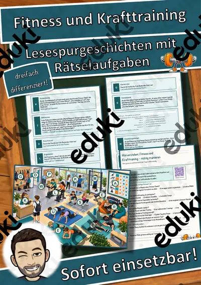
Lesespur: Fitness und Krafttraining: richtig trainieren – Lesespurgeschichte mit Rätseln (Klasse 9)

Lesespur: Fotografie: der Bildaufbau – Lesespurgeschichte mit Rätseln (Klasse 9)

Lesespur: Glauben in Freiheit: Religionsfreiheit und Toleranz – Lesespurgeschichte mit Rätseln (Klasse 9)

Lesespur: Hip-Hop: Rap, DJ und Beat – Lesespurgeschichte mit Rätseln (Klasse 9)

Lesespur: Impressionismus: Malen im Freien – Lesespurgeschichte mit Rätseln (Klasse 9)

Lesespur: Inside an Apple Tree – Lesespurgeschichte mit Rätseln auf Englisch (Klasse 9)

Lesespur: Inside the Bunsen Burner – Lesespurgeschichte mit Rätseln auf Englisch (Klasse 9)
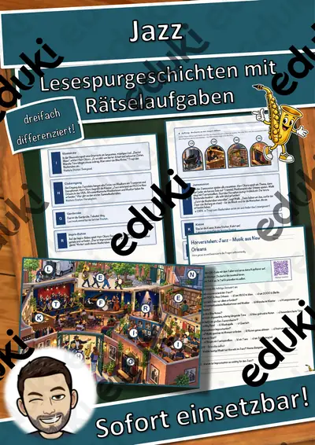
Lesespur: Jazz: Musik aus New Orleans – Lesespurgeschichte mit Rätseln (Klasse 9)
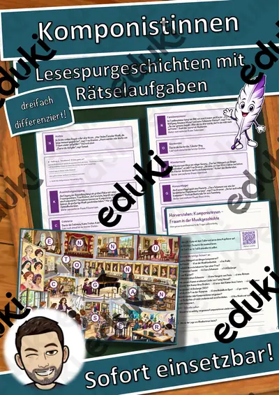
Lesespur: Komponistinnen: Frauen in der Musikgeschichte – Lesespurgeschichte mit Rätseln (Klasse 9)
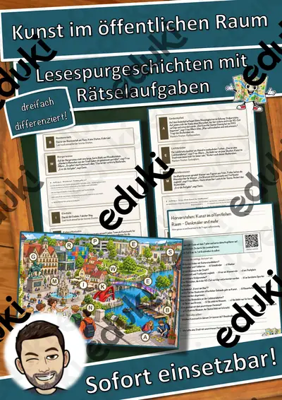
Lesespur: Kunst im öffentlichen Raum: Denkmäler und mehr – Lesespurgeschichte mit Rätseln (Klasse 9)

Lesespur: Kältebus und Wärmestube: Hilfe für wohnungslose Menschen im Winter – Lesespurgeschichte mit Rätseln (Klasse 9)

Lesespur: Künstlerinnen: vergessen und wiederentdeckt – Lesespurgeschichte mit Rätseln (Klasse 9)

Lesespur: Künstliche Intelligenz: wie Maschinen aus Beispielen lernen – Lesespurgeschichte mit Rätseln (Klasse 9)

Lesespur: Liebe, Freundschaft, Partnerschaft: was Beziehungen stark macht – Lesespurgeschichte mit Rätseln (Klasse 9)

Lesespur: Markt und Preis: Angebot und Nachfrage am Christbaummarkt – Lesespurgeschichte mit Rätseln (Klasse 9)

Lesespur: Musikvideos: wie Bild und Klang zusammenwirken – Lesespurgeschichte mit Rätseln (Klasse 9)

Lesespur: Phishing und Betrug im Netz erkennen – Lesespurgeschichte mit Rätseln (Klasse 9)

Lesespur: Pop Art: Kunst aus dem Alltag – Lesespurgeschichte mit Rätseln (Klasse 9)

Lesespur: Produktdesign im Alltag: vom Problem zum Prototyp – Lesespurgeschichte mit Rätseln (Klasse 9)

Lesespur: Reiz und Reaktion – Lesespurgeschichte mit Rätseln (Klasse 9)

Lesespur: Rettungsschwimmen: sicher im Wasser helfen – Lesespurgeschichte mit Rätseln (Klasse 9)

Lesespur: Richtig lüften im Winter: Luftfeuchtigkeit, Taupunkt und Schimmel – Lesespurgeschichte mit Rätseln (Klasse 9)
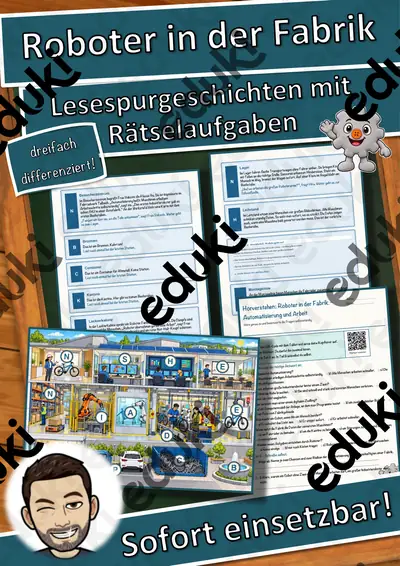
Lesespur: Roboter in der Fabrik: Automatisierung und Arbeit – Lesespurgeschichte mit Rätseln (Klasse 9)
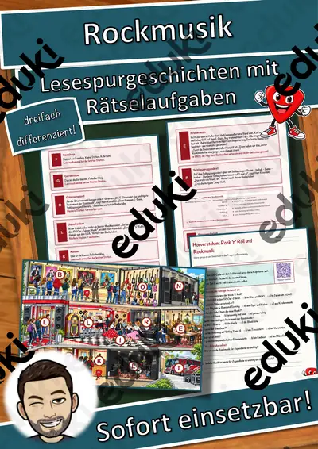
Lesespur: Rock ’n’ Roll und Rockmusik – Lesespurgeschichte mit Rätseln (Klasse 9)

Lesespur: Sich für den Frieden einsetzen – Lesespurgeschichte mit Rätseln (Klasse 9)

Lesespur: Sport und Ernährung: Energie fürs Training – Lesespurgeschichte mit Rätseln (Klasse 9)
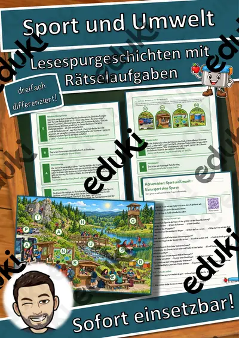
Lesespur: Sport und Umwelt: Natursport ohne Spuren – Lesespurgeschichte mit Rätseln (Klasse 9)
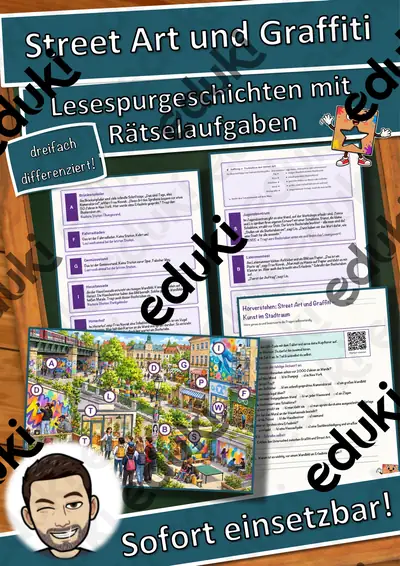
Lesespur: Street Art und Graffiti: Kunst im Stadtraum – Lesespurgeschichte mit Rätseln (Klasse 9)

Lesespur: Tabellenkalkulation: Zellen, Formeln, Diagramme – Lesespurgeschichte mit Rätseln (Klasse 9)

Lesespur: Verschlüsselung: vom Caesar-Code zum Schloss im Browser – Lesespurgeschichte mit Rätseln (Klasse 9)

Lesespur: Wettkampf und Nervosität: mit Druck umgehen – Lesespurgeschichte mit Rätseln (Klasse 9)

Materialpaket Winter für die 9. Klasse: 5 Lesespurgeschichten mit Rätselaufgaben fächerübergreifend (Hungerwinter 1947, Permafrost, Christbaummarkt & mehr)

Quali Mathematik Teil A – rechnen ohne Taschenrechner – Lesespurgeschichte mit Prüfungsaufgaben (Klasse 9)
Lesespurgeschichten in der 9. Klasse
Für die neunte Klasse sind die Texte dichter und die Rechenschritte anspruchsvoller. Das Material eignet sich auch zur Wiederholung vor Leistungsnachweisen.
Jede Geschichte liegt in drei Niveaustufen vor, die sich in Textlänge, Satzbau und Aufgabenanspruch unterscheiden. Weg, Stationen und Lösungswort bleiben gleich, sodass alle Fassungen gleichzeitig in einer Klasse laufen können.
Themen auf dieser Seite
Beispiele aus dieser Sammlung: Lesespur: Abschied und Trauer: wie Menschen ihrer Toten gedenken · Lesespur: Die Bestäubung · Lesespur: Die Gärtnerei: Ein Praktikum beim Gärtner · Lesespur: Street Art und Graffiti: Kunst im Stadtraum · Lesespur: Die Aluminiumhütte · Lesespur: Der Treibhauseffekt · Lesespur: Die Photovoltaikanlage · Lesespur: Der Laser.